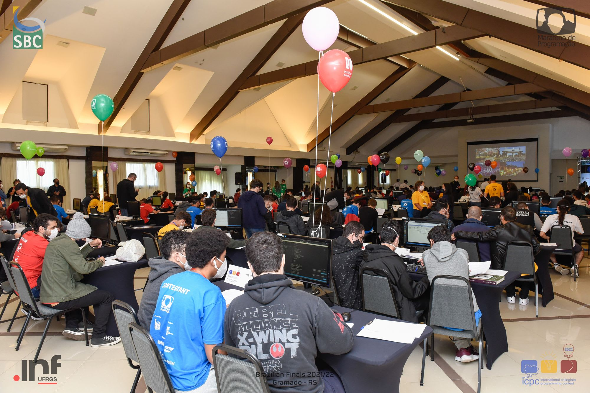
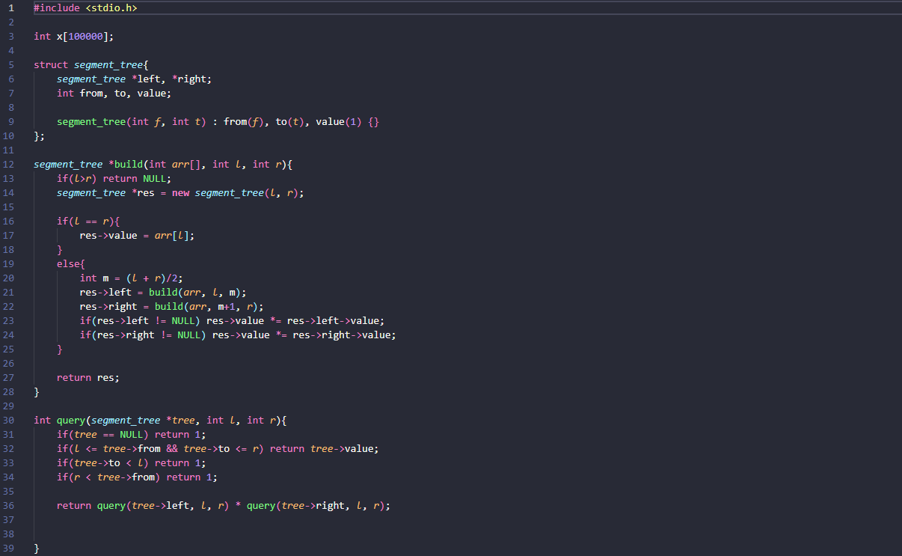

Maratona de Programação
Descrição do Projeto
Para o sucesso na Maratona, o treino é essencial. Por isso, é extremamente recomendável o estudo semanal dos diversos ramos abrangidos nos problemas da competição. Ao contrário do que muitos pensam, para se tornar um ótimo maratonista, não basta ter um raciocínio fora da curva.
Isso ocorre, pois diversos problemas só podem ser realizados com o uso de algoritmos complexos e específicos, os quais só são possíveis de serem utilizados a partir do estudo. Abaixo temos um exemplo de um algoritmo muito utilizado, a Segment Tree.
Dentre diversos tipos de questões, é possível citar: Ad-hoc, String, Geometria, Grafos, Paradigmas, Estruturas, dentre muitos outros. Abaixo é possível fazer o download da minha resolução de diversos problemas.
← Voltar ao portfolio